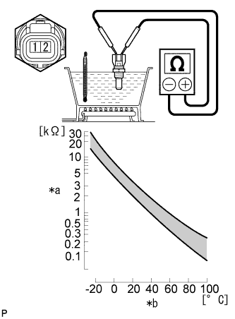

E.F.I. ウォータテンパラチャ センサ 単体点検
印刷
準備品一覧
1. E.F.I. ウォータテンパラチャ センサ
抵抗点検

SST( トヨタエレクトリカルテスター) を使用して、端子間の抵抗を測定する。
SST
09082-00030
09083-00170
基準値
端子
条件
基準値
1 - 2
約20°C時
2.32 to 2.59 kΩ
約80°C時
0.310 to 0.326 kΩ
イラスト内指示文字
*a
抵抗
*b
温度
■ 注 意 ■
センサを水中につけて点検を行う場合、ターミナル部に水が入らな いように注意する。点検後、センサについた水滴を拭き取る。